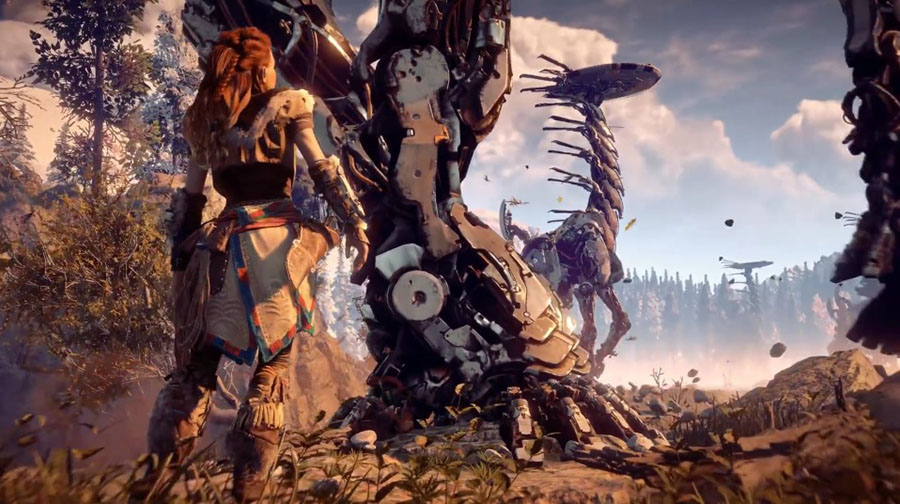

Another game whose end will not be seen by most people who face it, The Witcher 3: Wild Hunt is undoubtedly a true work of art. From its fascinating storyline to spectacular graphics, almost everything in it works the right way, even with it having started to serve as a reference for other games. However, if there is an aspect that I consider that CD Projekt Red achieved excellence in this game, it was in the sidequests and in the wealth of the world itself. It is amazing how each side mission has a nice story to be told and how the map is full of small details that will go unnoticed bymanypeople, but that help to make the whole universe even more fantastic.

Skyrim is one of those games we return to over and over again and the magic is always there. It’s replayability comes from the hundreds of different ways to play through this open-world RPG, from typical character builds like thief and warrior, to trying to play the whole game as a vegan or role-playing as a character from the game’s lore. Skyrim’s open world is filled with characters and beasts going on about their daily business without you, and you’ll often happen across a giant kicking a poor wolf into orbit or a couple of Thalmor escorting a captured Nord. This fantasy open-world RPG explores the vast and spectacular region of Skyrim – where you play as a Dragonborn, a prophesied hero thrown amid a tense civil war. The world is heavily inspired by the environments of countries like Norway and Iceland, taking their history, culture, flora, and folklore, and muddling them together with The Elder Scrolls realistic brand of high fantasy. Skyrim has a captivating story and astounding attention to detail, that makes this nearly decade-old game still one of the most talked about open-world games there is. It still has a dedicated modding commuting, too so you can check out the best Skyrim mods once you’ve exhausted all the ways to play.

In a world where Grand Theft Auto 5 exists, it can be difficult to release another modern, open-world city-based game. But Ubisoft found
a way to freshen up the formula by adding hacking, Dark Souls-like game invasions, and sharper social and political commentary. Watch Dogs
2 does all that in a slightly condensed, caricatured, but believable recreation of San Francisco. And it’s brilliant.
The troubles of main character Marcus and misfit hacker group DedSec make for a far more satisfying and friendly backdrop than that of the
first game. The sequel was finally allowed to take the (frankly hilarious) hacking mechanic and have fun a bit of fun with it. Anything can
be hacked, from smartphones and traffic lights to vehicles and security cameras, and with various drones along for the ride, the moment-to-moment
gameplay is action-packed, varied, and surprisingly funny. Nothing beats hacking a parked car and using it play bowling with any nearby security guards.
There are some standout missions across the main story, but exploring San Francisco is the main highlight thanks to a top tier soundtrack,
a detailed recreation of the Bay Area, and the ability to hack oncoming traffic to clear up the roads a little.

It is an important fact for fans of Horizon Zero Dawn. If the chronology of the futuristic game took place in the real world, on April 4 it would be about a thousand years before the birth of the heroine Aloy. She was born on April 4 of the year 3021. Horizon Zero Dawn is a game from Guerrilla Games, a producer responsible for Killzone as well. Horizon Forbbiden West, direct sequel, is scheduled to launch in the second half of 2021. The first game received a PC version in August 2020.
